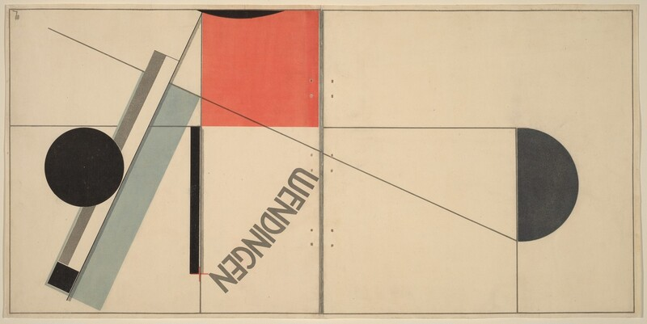

把识别衣服、推荐参考、生成背景三项任务并排比较。
AI / DESIGN STUDIES设计与生成式 AI向下滚动，按顺序阅读 · 点击卡片跳转章节
DESIGN STUDIES / 2026CHAPTER 01
01
设计中的新协作方式认识
AI
AI
生成 · 模拟 · 扩展进入章节 ↗
DESIGN STUDIES / 2026CHAPTER 02
02
模型、软件、网络与 Agent看懂
AI 组成
AI 组成
任务决定工具进入章节 ↗
DESIGN STUDIES / 2026CHAPTER 03
03
AI 工具怎样参与学习与工作协作
案例
案例
从模糊想法到清晰条件进入章节 ↗
DESIGN STUDIES / 2026CHAPTER 04
04
从图片到视觉依据研究
与参考
与参考
研究 · 分析 · 引用进入章节 ↗
01—04 / 顺序课件 · 05—11 规划中
01.01 / 小节CHAPTER 01
理解概念
AI 是什么
人工智能是一个广泛领域，机器学习属于其中一类方法，深度学习又属于机器学习。生成式 AI 描述的是产生新内容的用途，这些词并不处在同一层级。
概念之间的关系
人工智能 / 广泛领域
机器学习 / 一类方法
深度学习 / 其中一类方法
生成式 AI / 按用途描述
生成式 AI 按用途命名，不是与机器学习并列的一层技术。
为三个任务分别写出输入、输出和是否生成新内容。
01.02 / 小节CHAPTER 01
理解概念
什么是生成式 AI
生成式 AI 可以输出文字、图片、声音、视频和代码，也可以在已有素材上继续编辑。先说清楚你需要的交付物，再决定怎样使用生成能力。
同一主题，不同交付物
文字 / 设计说明
图像 / 场景草图
视频 / 动态分镜
代码 / 作品页面
选同一个设计主题，列出文字、图片、声音、视频与代码的不同交付物。
不要把‘生成’只理解为从空白制作；编辑已有素材也可能使用生成能力。
选一个主题，写出两种不同媒介的生成需求。
01.03 / 小节CHAPTER 01
理解概念
AI 怎样产生结果
训练阶段形成模型能力；使用阶段，系统根据当前输入生成一次结果。生成过程有不确定性，同一要求可能得到不同的构图和细节。
训练与使用
训练 / 形成模型能力
输入 / 当前要求与素材
生成 / 本次输出
复查 / 判断与修改
将训练与使用分开画：训练形成能力；使用时输入条件，得到一个具体结果。
一次输出不等于模型刚学会了你的项目，重复输入也不保证同样结果。
用同一要求尝试三次，记录哪些内容稳定、哪些内容变化。
01.04 / 小节CHAPTER 01
理解概念
语言模型与图像模型的基本思路
语言模型依赖上下文逐步产生文字；图像模型有多种技术路径，扩散方法是常见的一种。观察两者时，重点看输入、逐步形成的过程和最后的输出。
观察案例 / 图像逐步形成输入 → 结构 → 细节 → 输出
观察文字续写与图像逐步形成两个示意，分别记录输入和输出。
不要把常见的扩散方法说成所有图像模型的唯一做法。
用两句话说明语言与图像生成的不同观察方式。
01.05 / 小节CHAPTER 01
理解概念
输入、上下文与输出
指令、原始照片、参考图、文件和历史对话共同构成当前任务的上下文。多模态表示系统能处理多种形式的信息，但具体支持什么仍取决于产品和模型。
输入逐步增加
01 只给文字
02 加入原始照片
03 加入场景参考
04 明确保留与修改范围
对比只给文字、加入原图、再加入视觉参考三个输入层次。
若没有说明每张参考图的用途，模型可能混合人物、服装和场景。
写一份素材清单，标明每张图要保留或只参考什么。
01.06 / 小节CHAPTER 01
理解概念
AI 在设计流程中的用途
AI 可参与研究、构思、制作、修改和呈现。越靠近正式交付，越需要核对真实结构、细节和输出规格。
设计流程
研究 / 找依据
构思 / 定方向
制作 / 出草稿
修改 / 查问题
呈现 / 做交付
把研究、构思、制作、修改、呈现放在同一张流程图，并给每步写验收条件。
探索草稿可以开放，正式产品图不能容许结构和文字失真。
为自己的项目列出五步流程与各步交付物。
01.07 / 小节CHAPTER 01
理解概念
AI 为什么会出错
生成结果可能编造来源、误解要求、改变服装结构或弄错文字。视觉可信与语言流畅都需要再接受事实和画面的核对。
结果检查
来源是否真实
是否符合指令
结构是否变形
文字是否正确
分别检查事实、指令理解、主体结构、文字细节和多张作品的一致性。
画面可信或回答流畅都不是准确性的证据。
找出一张生成结果中的两个可验证问题，并提出修正方法。
01.08 / 设计者的判断
创意，从 0 到 1。
工具，让 1 继续生长。
0→1→∞
先决定你想表达什么，
再决定 AI 帮你做什么。
AI 可以参与早期构思，提出联想与备选方向。设计者需要定义问题、选择值得发展的概念，并判断作品是否成立。
你的拍摄照片你的视觉意图AI 协助探索你的判断与成品
课堂实践：选一张自己的照片。写下你想保留的内容，以及你想改变的内容。
01.09 / 生成演示
生成
从一张原始模特照片开始。
01 / 原始照片
输入图 1，保留模特、黑色皮革大衣、服装结构与人物特征。
02 / 场景生成
保留图 1 的模特与大衣。参考图 2 的阴天光线和街拍气氛，置于巴黎街头，完成时尚拍摄。
03 / 产品白底图
提取图 1 模特身上的黑色皮革长大衣，保留领口、纽扣、长度与材质，制作干净的白底商品图。
01 — 03
01.10 / 小节CHAPTER 01
理解概念
使用前的基本边界
素材能否上传、引用或公开，需要分别看许可、肖像、保密要求和使用说明。先判断素材边界，再开始生成与展示。
观察案例 / 01.10
给一组素材判断：可以直接使用、需要确认授权、适合换成练习素材。
上传、引用、公开前分别检查素材来源、肖像许可、项目保密与标注方式。
课堂分析能查看的作品，不一定能直接用于公开宣传。
把三份素材标为可用、需确认或应替换，并说明原因。
02 / 看懂组成
同一个任务，
经过不同的层。
向下滚动，依次看软件、Agent、模型分别承担什么。
01 / 工作界面
软件与平台
你看见的对话框、画布、时间线和文件管理。它把一种或多种模型能力组织成可用的操作。
ChatGPT、Lovart、豆包、TapNow 都是使用入口；一个平台可以接入多个模型。02 / 执行方式
Agent 与工作流
围绕目标拆分步骤、调用工具、观察结果再继续。执行范围由工具、资料与权限决定。
“研究参考 → 整理依据 → 制作页面 → 检查结果”是一条可复查的工作链。03 / 底层能力
模型
处理输入并生成输出的系统。语言、图像、视频和 3D 模型服务不同任务，版本也会变化。
例如 Nano Banana 用于图像，Seedance 用于视频；月之暗面是公司，Kimi 是它的产品与模型系列。展开模型图鉴 ↓01 / 03
模型图鉴按任务认识模型与官方入口展开
模型名、产品名与开发公司不是同一层。选择一个条目，查看用途和官网；若官网限制嵌入，请点击“打开官网”。信息核对于 2026 年 10 月。
02.01 / 小节CHAPTER 02
理解概念
模型是什么
模型是训练后用于处理输入并产生输出的计算系统。比较模型时，要看它能接收什么、生成什么、控制程度如何，以及速度和资源成本。
观察案例 / 02.01
将同一任务交给不同模型，比较结果与等待时间。
为同一个任务记录模型名称、版本、输入输出、控制项、速度和结果。
模型能生成某种内容，不说明当前产品已开放这项能力。
制作一张模型比较卡，只比较与你的任务有关的条件。
02.02 / 小节CHAPTER 02
理解概念
按任务认识模型
语言、图像、视频、语音等任务需要不同能力；有些模型也能处理多种信息。一款产品可以在不同步骤调用多个模型。
按任务看能力
语言 / 理解与写作
图像 / 生成与编辑
视频 / 动态内容
语音 / 识别与生成
先写目标产物，再找处理文字、图像、视频或语音所需的能力。
一个产品可能调用多个模型；界面按钮不一定是模型名。
把‘分析照片—换背景—讲解结果’对应到所需能力。
02.03 / 小节CHAPTER 02
理解概念
软件与平台是什么
软件和平台提供对话框、画布、文件管理、编辑与导出。它们把模型能力组织成可使用的流程，所以同一个模型在不同平台上的体验也可能不同。
观察案例 / 软件平台00:16
拆开界面、文件管理、编辑控制、模型调用和导出五层。
相同模型放在不同平台，参考控制与可编辑性可能不同。
观察一个软件页面，给五层功能各找一个可见证据。
02.04 / 小节CHAPTER 02
理解概念
GPT 模型、ChatGPT 与 Codex
GPT 是模型系列名称；ChatGPT 提供交互界面，Codex 面向代码与开发任务。判断一次任务能做什么，还要看当前使用的模型、工具和环境权限。
GPT 模型提供能力ChatGPT对话与工作界面Codex开发任务方式
三者是不同层面的名称；具体能力以当前环境为准。
画一张关系图：模型提供能力，产品承载交互，工作环境决定可执行动作。
不要凭品牌名推断当前会话有相同模型、工具或文件权限。
用一张卡说明生成、运行和发布网站分别发生在哪里。
02.05 / 小节CHAPTER 02
理解概念
Lovart 等设计平台怎样组织能力
设计平台把 brief、素材、画布、生成、编辑和导出串成流程。使用时要看清哪一步由模型生成、哪一步由平台编辑，以及结果能否继续修改。
TAPNOW / 官方演示AGENT · APPS · 画布
从 brief、素材、画布、生成、编辑到导出，追踪每一步实际使用的功能。
一站式平台不表示所有步骤由同一模型完成。
画一条设计平台流程线，标注可修改的中间结果。
02.06 / 小节CHAPTER 02
理解概念
网页、客户端与云端
网页与客户端回答‘在哪里操作’，本地与云端回答‘在哪里处理或保存’。桌面软件也可能请求云端模型，上传前应确认素材去向。
四个不同问题
在哪里操作？
在哪里计算？
素材存在哪里？
结果如何删除？
分别问‘在哪里操作’‘在哪里计算’‘文件在哪里保存’。
安装桌面客户端不意味着模型或文件都在本地。
为一个上传照片的流程标出入口、处理位置和保存位置。
02.07 / 小节CHAPTER 02
理解概念
网络连接与联网搜索
连接网络才能使用某项服务，与系统主动搜索网页是两回事。已有知识、上传资料和实时检索结果应分别标注来源。
信息来源
模型已有知识
当前上传资料
实时网页检索
打开原始出处核对
把已有知识、上传文件和实时搜索结果放入三个来源框。
能使用网络服务，不代表回答前主动搜索了网页。
找一个需要最新日期的问题，记录实际打开的原始来源。
02.08 / 小节CHAPTER 02
理解概念
API 是什么
API 是软件之间按规则交换请求和结果的接口。一个网站可以通过 API 请求图像服务；使用网页产品与调用接口也可能有不同的账号和费用。
一次 API 请求01应用发送任务与素材 02接口按约定传递请求 03服务处理并返回结果
用‘我的网站向图像服务发送请求并收到结果’解释接口。
网页产品的订阅和 API 用量可能是不同入口。
画出应用、API、服务和返回结果的四步关系。
02.09 / 小节CHAPTER 02
理解概念
Agent 是什么
Agent 围绕目标拆分步骤、调用工具、观察结果再决定下一步。它能执行到哪里，取决于可用工具、资料、规则和权限。
目标↓拆分步骤↓调用工具↓检查结果↺
将目标拆解、工具调用、观察结果、继续或停止画成循环。
Agent 给出的计划与已经执行的动作要分别确认。
为‘研究品牌并做页面’列出每一步的工具和验收点。
02.09 / EXTENSION 01PERSONAL AGENT
从视频观察到选择方法
Personal Agent，怎样选？
视频把网页型 Agent、Coding Agent、广义与狭义 Personal Agent 放在一条发展线上。课程里先问任务：是持续照顾生活中的零碎事务，还是围绕明确项目制作交付物？
Personal Agent
连接日历、消息与常用服务，记住偏好，持续跟进任务；重点观察上手难度、可连接的服务，以及它得到哪些数据和操作权限。
例：安排日程、追踪预约、提醒后续行动Working Agent
围绕 brief、文件和验收标准组织工作，按步骤调用工具、交付可检查的结果；重点观察流程控制、文件格式和复查能力。
例：研究参考 → 制作课件 → 预览修改先做四项检查① 任务是生活辅助还是项目生产？② 想开箱即用，还是愿意配置工作流？③ 已订阅什么服务，是否需要额外付费？④ 数据放哪里，模型和权限能否选择？
延伸参考：珍妮丁丁说《Personal Agent 怎么选？》。本页依据现有视频画面与产品官方资料整理；完整字幕和 PPT 尚待核对。
02.09 / EXTENSION 02PRODUCT MAP
视频中的四款产品
先看产品定位，再决定要不要安装。
Muse
Meta 的个人助手，强调在日常应用和消息中接任务，适合想从生活事务开始、希望尽快上手的人。
官方介绍 ↗Grok Bot
给多个 Bot 分配持续任务；Bot 有独立云端电脑，可跨应用执行。适合希望把不同事务交给多个助手的人。
官方介绍 ↗dots
OpenAI 的持续运行 Agent，能连接应用并在云端电脑中推进目标。已有 ChatGPT 订阅的人，可先核对自己账号的可用范围。
官方介绍 ↗Cue
Manus 的个人 Agent 平台，强调给 Agent 独立的邮件、电话、电脑与受控支付能力，适合需要跨渠道处理事务的人。
官方介绍 ↗课堂讨论
你已经用 Codex 制作课件，还需要另一个 Agent 吗？选一个真实任务，写出它需要的服务、权限、持续时间和交付物，再决定用现有 Working Agent，还是增加 Personal Agent。
Logo 取自用户提供的视频画面截图；产品能力按各产品官方页面核对。功能、订阅与地区可用性会变化，实际选择时应重新检查。
02.10 / 小节CHAPTER 02
理解概念
和 Agent 协作时，这四个词各管什么？
同一项任务里，要求、做法、长期风格和依据可以同时出现。先分清角色，再判断该改哪一层。
Prompt 提示词 / 指令
告诉系统这一次要完成什么、使用哪些素材、保留什么，以及怎样判断结果。
例：只替换照片背景，保留人物、服装结构与画幅。Skill 技能说明
把一种常做的任务写成可重复使用的步骤、检查项或工具用法；在一些系统里以 SKILL.md 提供。
Soul 角色与表达方式
SOUL.md 是 OpenClaw 等部分 Agent 系统中的文件，用来约定语气、偏好与行为边界；并非所有 AI 都有这个文件。
Source 来源 / 源资料
说明结论或作品依据了哪份原始资料。网页开发中 source 也可指“源码”，要看语境。
例：原始照片、课程 brief、作品馆藏页与官方说明。02.11 / 小节CHAPTER 02
理解概念
工具、插件、工作流与知识库
工具做具体动作，连接器扩展可访问服务，工作流安排步骤，知识库提供可检索资料。把这些角色分开，才能知道任务卡在哪一层。
协作资源
工具 / 执行动作
连接器 / 接入服务
工作流 / 安排步骤
知识库 / 提供资料
把工具、连接器、工作流、知识库各放在一列，标明它们提供什么。
连接资料不等于自动获得修改权限，也不保证内容会被正确引用。
为一个研究任务画四栏资源表。
02.12 / 小节CHAPTER 02
理解概念
能力、权限与结果的区别
‘模型知道怎样做’‘软件提供该功能’‘当前允许执行’是三件事。代码生成、运行、预览、检查和发布也是不同状态。
从能力到交付
模型能理解
产品有功能
当前有权限
任务已执行并检查
逐项核对模型能否理解、软件有没有按钮、当前环境是否允许执行。
一段代码、一个预览地址和已发布的网站是不同的结果。
为网站任务写出草稿、执行、检查、交付四个状态。
02 / 模型与工具图鉴
打开你的
AI 工具箱。
先明确任务，再选择工具。
同一个工具，也可能承担多种任务。
点击工具查看使用说明。可用功能与模型以当前产品为准，课堂不依赖固定版本或价格。
02.13 / 小节CHAPTER 02
理解概念
如何读懂一个 AI 工具页面
遇到陌生 AI 工具，先查用途、输入、输出、编辑控制、模型、联网、保存与费用，再用自己的任务做一次小测试。
观察案例 / 02.13
给学生一个陌生工具，让他们整理一张使用说明卡。
按用途、输入、输出、控制、模型、联网、保存和费用审阅页面。
不要只凭宣传语判断工具是否适合自己的素材和输出。
选择一个陌生工具，完成一张可复查的使用说明卡。
03.01 / 小节CHAPTER 03
理解概念
学习中的协作
AI 可以帮助解释术语、整理笔记、辅助阅读和设计复习题。学习时要把它的解释与课程原文、作品和可靠资料对照。
观察案例 / 03.01
将一段复杂的艺术史文字改写成易懂解释，再回看原文。
请 AI 解释一段难读的课程材料，再回看原文核对术语与出处。
简化后的解释可能省去限定条件，不能替代原文。
把一段材料改写成三条要点，并注明核对位置。
03.02 / 小节CHAPTER 03
理解概念
日常与事务协作
邮件、会议与待办适合先由 AI 整理成草稿；真正发送、建日程或移动文件，则需要相应工具和权限。
观察案例 / 03.02
将项目沟通记录整理成待办、负责人和时间节点。
把会议记录转为待办、负责人、期限，再核对是否真的写入日历或文件。
提出行动建议与在外部系统执行操作是两件事。
整理一份可检查的项目待办表。
03.03 / 小节CHAPTER 03
理解概念
理解设计 brief
以六张眼镜 Lookbook 为例：先定目标受众和使用位置，再写清同一人物要可辨认、镜框结构要准确、系列视觉要统一。这样 brief 才有可检查的标准。
LOOKBOOK / BRIEF06交付图像海报、社媒与作品集 01同一人物跨镜头保持可辨认 01真实产品镜框与镜腿结构准确
案例摘自本地《固定人物，生成一套 Lookbook》教案的方法结构。
把六张眼镜 Lookbook 的受众、渠道、人物一致性和镜框准确性写进 brief。
只写‘拍得高级’无法判断六张图是否满足项目目标。
写一份六张图的 brief，并列出人物和产品两个验收条件。
03.04 / 小节CHAPTER 03
理解概念
拍摄前的准备
后期能否稳定生成，取决于前期素材。人物照片用于身份参考，眼镜实物图用于结构核对，其他视觉图只提供光线、构图或色彩；每张素材的角色需要标注。
LOOKBOOK / 素材角色人物身份参考授权照片 眼镜结构依据产品原图 视觉光线与构图标明出处
案例摘自本地《固定人物，生成一套 Lookbook》教案的方法结构。
准备已获授权的人物照片、眼镜实物图和分别负责光线、构图、色彩的参考。
人物参考不能代替产品原图；紧贴画幅的照片也不利于后续排版。
列一张素材清单，标明每张图要固定什么、只参考什么。
03.05 / 小节CHAPTER 03
理解概念
构思与方向探索
系列图先固定人物、产品与整体视觉规则，再有目的地改变近景、半身、全身、正侧面、姿态和场景。先做两张小样，确认身份与镜框，再扩展到六张。
LOOKBOOK / 固定与变化固定人物与产品先做正、侧面小样 变化镜头与姿态按六种用途安排 筛选一致性与差异逐张核对
案例摘自本地《固定人物，生成一套 Lookbook》教案的方法结构。
先做一张正面、一张侧面的小样；固定人物与镜框，再改变镜头、姿态和场景。
六张只换背景的图不一定能承担六种不同的使用位置。
为同一人物列出六个镜头用途，选两张小样做一致性检查。
03.06 / 小节CHAPTER 03
理解概念
文字与表达协作
把真实制作过程写进项目说明：选择了什么底模或参考，哪些条件固定，哪些条件变化，失败图怎样修正。AI 可以帮助整理文字，但不能代替过程记录。
LOOKBOOK / 过程说明记录版本与参数保留候选和失败图 判断修改理由说明结构问题 表达设计选择写成可核对的说明
案例摘自本地《固定人物，生成一套 Lookbook》教案的方法结构。
记录底模、参考、版本、失败原因和筛选理由，再整理为项目说明。
只保留最后六张图，无法解释人物或产品细节是怎样被修正的。
用四句话说明：目标、固定条件、变化条件、人工修整。
03.07 / 小节CHAPTER 03
理解概念
视觉与制作协作
研究、图像、视频、画质增强、排版和网页制作对应不同交付物。先找清楚任务的输入与输出，再选择或串联工具。
观察案例 / 角色素材00:09
按照研究、图像、视频、增强、排版、网页的交付物安排工具入口。
某工具能做很多事，不代表它适合每个环节的质量要求。
为‘换背景—优化—发布’画工具交接图。
03.08 / 如何交代任务 · 互动案例
AI 看不到
你脑中的画面。
模糊的要求，
留下更多补全空间。
探索时，你可以从粗略想法开始。进入制作时，需要逐步明确主体、场景、光线、视角和修改范围。
也可以让 AI 先帮你梳理问题。你不必一次写出完美指令，但需要知道哪些决定不能交给它猜。
目标 + 素材 + 条件 + 范围 + 检查标准
接下来，观察两组对比。
03.08 / 案例一 · 条件不足
“黑裙子，摄影棚。”
信息不足给模特穿上黑色的裙子，站在摄影棚里拍照。
模特是谁？裙子什么版型？穿什么鞋？什么背景与光线？什么机位与画幅？
AI 生成的教学示意，展示信息缺失时可能出现的视觉差异；并非控制变量实验记录。
03.08 / 案例一 · 明确条件
把“想象”变成条件。
方向更明确主体：粉色头发亚裔模特服装：黑色连衣裙 + 黑色板鞋场景：白色无缝摄影棚镜头：正面平视，全身入镜光线：中性偏冷，柔和白光
查看完整提示词与参考要求
使用参考图 1 中的粉色头发亚裔模特，穿着参考图 2 中的黑色裙子，搭配黑色低帮板鞋。模特在白色无缝摄影棚中正面站立，全身入镜，双臂自然垂放。相机正面平视拍摄，使用中性偏冷的柔和白光，保留自然接触阴影。保留人物面部特征，以及裙子的版型、长度、面料与结构细节。
正式练习需上传人物与服装照片，并说明每张图的用途。当前图片为概念示意，不代表参考照片已被精确保留。
03.08 / 案例二 · 条件不足
“做一个简约空间。”
信息不足我需要一个简约的空间设计稿。
用于阅读还是居住？多大空间？什么材料？怎样布局？从哪里观看？
“简约”不能独自决定空间。风格、功能、尺度与材料需要进一步说明。图片为 AI 教学示意。
03.08 / 案例二 · 明确条件
让风格落到材料与布局。
可见的要求功能：约 30㎡ 阅读空间风格：日式侘寂 / Wabi-sabi材料：哑光黑木地板、暖灰抹灰墙布局：四座、长桌、靠墙书架视角：入口平视，左侧自然光
查看完整提示词
为一个约 30 平方米的阅读空间制作室内概念效果图，以日式侘寂审美为参考。使用哑光黑色木地板、暖灰色抹灰墙面和低矮原木家具，设置四个阅读座位、一张长桌与靠墙书架，中央保留清晰通道。左侧大窗引入柔和自然光，以米白、暖灰和黑色为主色，减少装饰。相机从入口平视拍摄，呈现主要布局与材料关系。
概念效果图不能验证真实尺寸与施工可行性。进一步设计需要平面图、尺度和材料依据。
03.09 / 如何进行多轮修改
指出问题，
再决定怎么改。
定位问题
“画面右侧太满，主体周围缺少留白。”
说明变化
“减少右侧装饰，为标题留出干净区域。”
保留成立的部分
“保持人物、服装、光线和相机角度一致。”
结果更统一，还需要检查什么？
可以这样开始：“先帮我列出完成这项任务需要确定的条件，关键内容缺失时先问我。”
03.10 / 小节CHAPTER 03
理解概念
人与 AI 怎样分工
人负责目标、关键选择与验收标准；AI 协助整理、探索和执行。涉及事实、肖像、产品结构与最终交付时，应设置明确的人工检查点。
观察案例 / 03.10
图片进入排版前检查主体，资料进入正文前检查来源。
把定义目标、生成备选、选择方向、核对事实与最终验收分配给人或 AI。
高准确性环节必须有明确的人为检查点。
给自己的流程添加两个必须人工签字的节点。
03.11 / 小节CHAPTER 03
理解概念
工具如何选择与衔接
选择工具不仅看画面质量，还要看控制能力、文件格式、速度、费用和设备要求。上一步的输出是否能被下一步继续编辑，同样关键。
观察案例 / 03.11
生成结果能否继续分层编辑，是否需要转入 Photoshop。
比较质量、控制、格式、速度、费用与设备，再决定是否换工具。
图像看起来完成，不代表文件能继续分层编辑。
为一个任务选择一条单平台或多工具路线并说明代价。
03.12 / 建立个人协作习惯
用自己的照片，
写下第一份要求。
你的任务说明
填写左侧内容，整理成可复制的任务说明。
这是本地整理模板，不会上传照片或调用生成服务。
练习之后 / 保存过程
为每个项目保留任务说明、原始照片、参考出处、提示词版本、修改理由与最终文件。下次遇到类似问题时，能回看每一次选择。
04.01 / 小节CHAPTER 04
理解概念
先提出研究问题
研究问题要指向一个设计决定。把宽泛主题缩小为具体问题，才能知道该寻找什么资料以及研究何时足够。
把问题缩到能决定设计01宽泛主题研究洛可可 02具体问题装饰语言怎样服务服装照片？ 03设计决定背景纹样、道具与留白
把宽泛主题缩成一个会影响具体设计选择的问题。
‘研究洛可可’过大，不能直接指导一张服装照片的背景。
写出研究问题、预期用途和需要回答的三个子问题。
04.02 / 小节CHAPTER 04
理解概念
区分研究资料的用途
资料可能用于证明事实、启发视觉方向、说明制作方法或规定交付规格。同一张图片能提供色彩灵感，却未必能证明它的历史背景。
四种参考用途
事实与背景
视觉方向
制作方法
交付规格
给每份资料标注它支持事实、视觉方向、制作方法还是交付规格。
图片收藏平台上的图片不自动成为历史事实证据。
给四张参考各写一个用途标签。
04.03 / 小节CHAPTER 04
理解概念
构建关键词
把主题拆成时期、地区、人物、材料、构图和工艺，再用中英文词与同义词逐步缩小搜索范围。
观察案例 / 04.03
将“复古”拆成具体年代、摄影方式和印刷效果。
从时期、地区、人物、材料、构图和工艺扩展中英文关键词。
只搜索‘复古’会混合不同年代、媒介和视觉语言。
从一个宽词扩展出六个更精确的检索词。
04.04 / 小节CHAPTER 04
理解概念
选择搜索渠道
作品信息优先追溯收藏机构或创作者；视觉联想可以从图片平台开始，但仍需回到原出处。不同渠道各有用途和缺口。
观察案例 / 04.04
作品信息查收藏机构，视觉联想查图片平台，再追溯原出处。
根据问题分别选档案、机构、创作者、专业媒体和图片平台。
视觉联想与作品事实常需要不同来源核对。
给同一主题列出两个搜索渠道及各自用途。
04.05 / 小节CHAPTER 04
理解概念
使用图片进行反向检索
反向检索可以帮助找到原图、作者、作品名与其他版本。比较裁切、日期和配文，避免把转载信息当成原始记录。
一张图的出处路径01转载图记录已知线索 02反向检索比较裁切与版本 03原始页面核对作者、年代和作品名
用图片反向检索寻找原始版本、作者、作品名和可能的裁切。
转载图片的标题或年代可能被改写。
追溯一张无署名图片，记录两个候选出处和判断依据。
04.06 / 小节CHAPTER 04
理解概念
让 AI 协助研究
AI 能协助拆问题、提出检索词和整理比较表。它提出的来源与事实仍需逐项打开并核对。
观察案例 / 04.06
让 AI 提供检索计划，再由学生核对其中的关键事实。
让 AI 帮你拆问题和整理已找到的资料，再逐项打开关键来源。
AI 给出的链接与引用需要亲自核对，不可直接作为最终依据。
生成一份检索计划，并核对其中两个事实。
04.07 / 小节CHAPTER 04
理解概念
判断来源质量
判断来源时，查看作者或机构、发布时间、原始证据与使用语境。原始材料与后来的评论可以互相补充，但支持的结论不同。
观察案例 / 04.07
品牌自己的项目介绍与第三方评价分别能支持哪些结论。
检查机构、作者、日期、证据与作品所处语境。
品牌自述与第三方评价可支持的结论不同。
对两条来源分别写出可信范围与不足。
04.08 / 小节CHAPTER 04
理解概念
记录资料与引用
参考资料记录应写明作者、作品、年代、机构、链接、用途和许可信息。这样在制作与公开展示时才找得到依据。

在参考记录卡中写作者、作品、年代、出处、链接、用途与许可。
保存图片文件但不保存出处，后续难以引用与核实。
完成一张可复制的参考资料记录卡。
04.09 / 小节CHAPTER 04
理解概念
分析一张参考图
分析参考图时，把‘柔和’‘强烈’等判断落到构图、明暗、材质、光线、视角与色彩的可见证据上。
大都会艺术博物馆 · 公有领域 ↗
对一张图标出构图、色彩、明暗、材质、光线与叙事的可见证据。
‘很高级’‘很柔和’不是足够具体的视觉分析。
在一张参考图上写出五条有证据的观察。
04.10 / 小节CHAPTER 04
理解概念
组织 Moodboard
研究板解释事实与背景，方向板展示视觉语言，执行板说明具体制作。每张图都要有清楚的角色，避免只把图片堆在一起。
主体场景材质
把研究板、视觉方向板和执行板分开；给每张图指定角色。
重复贴很多类似图片，会让视觉决策更模糊。
做一张六图 Moodboard，并注明每张图负责什么。
04.11 / 小节CHAPTER 04
理解概念
将参考转化为设计要求
从参考中提取可迁移的色彩、构图或材料原则，再根据自己的照片与限制调整。保留方法，避免照搬具体作品。
视觉参考 / 两种语言曲线装饰 × 几何秩序
从参考中提取色彩、构图或材料原则，再结合自己的原图调整。
借鉴视觉规则与直接复制具体作品不同。
写三条从参考图转化来的设计要求。
04.12 / 小节CHAPTER 04
理解概念
形成可执行的研究结论
研究结论应同时写明选择、依据和下一步行动：概念、关键参考、视觉条件、素材需求与待验证问题。
研究结论交付
我选择什么
依据是什么
需要什么素材
下一步怎么做
把概念、关键参考、视觉条件、素材需求和待验证问题整理成一页。
研究若没有下一步动作，只会停留在图片收藏。
交付一页研究结论，说明选择依据与制作计划。
05—11 / 接下来
把方法带进作品。
前四章建立判断、协作与研究依据；后续章节将围绕同一批拍摄素材继续展开。
05风格图鉴与提示词06生成式图像的基本操作07从拍摄照片到视觉再创作08细节修整、画质优化与输出09从一张图到一套设计10Vibe Coding 与个人小网站11案例库与完整工作流
返回开头 ↑